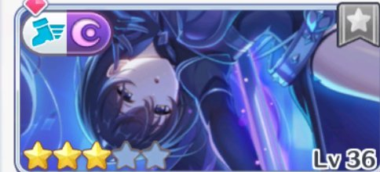
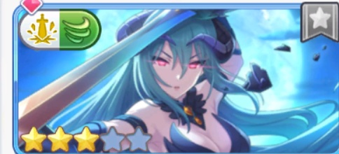
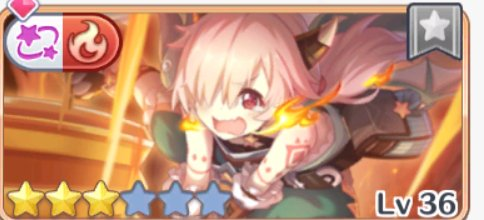
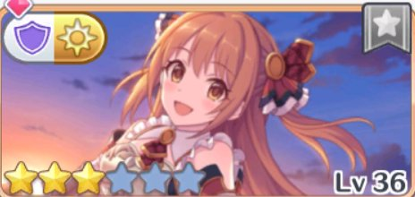
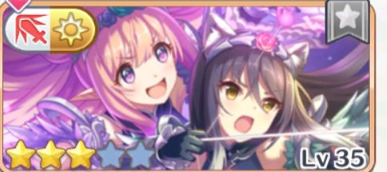
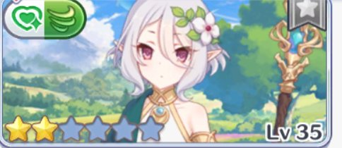
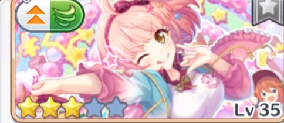
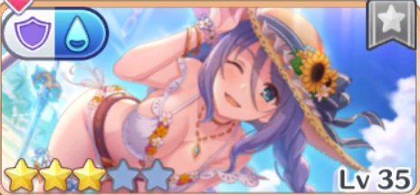
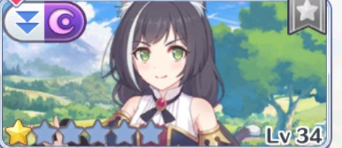

Your daily loop (about 10 minutes, once a day)
The game is gated by daily resets (5:00 AM JST = 3:00 PM ET). Do this once a day, in this order, then log off. Stamina refills about 1 every 5 minutes; log in once or twice a day so it never sits full.
- Home: Missions ミッション → すべて受け取る and Presents プレゼント → すべて受け取る. Free jewels and stamina.
- Guild House ギルドハウス → 一括受取: free stamina and mana.
- Mana shop (the + next to mana): buy the cheap sets with free jewels only (first 10 cost 10 jewels each; stop when the price jumps).
- Quest → Extra: EXP quest and Mana quest (2 runs each, skip tickets), Dungeon once (7 floors, easy, big mana + coins), Sanctuary 5 runs with skip tickets.
- Hard stages: open a character's missing gear → 入手方法 → まとめてクエストスキップ, tick the stages that drop it, skip 3 each. This is how gear and rank-ups come.
- Spend the rest of the stamina on the next main-story stage with Auto Progress オート進行, or on an event if one is running (events give far more per stamina).
- Upgrade: Character list → まとめて強化 for levels; on each core character press まとめて装備 (with "use ore" ticked) and rank up when it lights up.
- Arena + Princess Arena: use the free fights; Clan Battle 3 attacks on battle days.
- Gacha: only when a guide step says so (next: save for the next Princess Fes). Never press paid buttons.
Best team right now: Aglaia, Hatsune & Shiori, Grace, Shinatsu, Pecorine (power ~26,000). Picking these 5 is what broke the 9-10 wall.
Where you are now
Lv 15 → 69
Player level
2-12 → 10-9
Main story stage (Normal)
5,148 → 26,052
Team power
7 ★3s
From 9 Special Fes 10-pulls: Grace, Inori, Hatsune & Shiori, Shizuru, Chieru, Shinatsu, Aglaia
Hard 1-1 → 5-x
Hard stages cleared (memory pieces)
$0
Real money spent
What you should do next
- Before Wed 11/25, 6:33 PM ET: each time you reach 1,500 free jewels, do one more Special Fes 10-pull (the blue 1,500 button). After Wednesday, save jewels for the next Princess Fes.
- Clan Battle starts 11/25. Join your brother's clan (it's unlocked) and do your 3 attacks a day. You have 12+ characters at level 34 or higher, which is enough for 3 different teams. Your player ID for him: 275 752 060.
- Gear Shinatsu. She's level 66 and Rank 4, but her gear slots are mostly empty. Run the Hard stages that drop her gear (tap an empty slot → 入手方法).
- Mana is the bottleneck now. It's spent down to near zero on levels. Do the daily Mana quest and the daily 10 mana-shop purchases (free jewels; the first 10 are cheap), and spend stamina on stages for mana.
- You still have EXP Mega Potions left. Use them through bulk enhance まとめて強化 once you have mana again. The bench characters are the next to level.
- Link the account. The game asked to link to Google, Apple or X, and I pressed "Later". Until it's linked (or a transfer password is set: メニュー → データ引き継ぎ), losing the emulator means losing the account.
- Where I stopped (the hard cap): Normal 9-10 and Hard area 5–6 both beat the team; mana is spent (70k left), with 651 stamina and 1,230 jewels left. The next jump is gear: rank everyone up as Hard drops arrive, and use bulk enhance after the daily Mana quest. 12 characters are now level 66.
- Princess Arena is unlocked too (3 teams). Defense teams are saved; opponents were 21–35k, so I didn't fight.
- Arena: you're unranked-tier. Do 5 fights a day once your team power is near your opponents'. The 7 strongest characters make a good defense team.
Your main team (pictures from your own roster)
Aglaia
Fes rate-upSS (9.6/10) ★3 · Lv67 · Rank 9Pulled on the 9th Fes 10-pull. Your strongest character (power ~6,500). Magic buffer; her permanent buff needs an all-light team. Invest #1 now.

Grace
Fes limitedSS ★3 · Lv66 · Rank 3–4Physical booster: speeds up your physical attackers and refills their TP. Invest #1.

Shinatsu
Fes limitedSS ★3 · Lv66 · Rank 4Pulled on the 6th Fes 10-pull. Wind element. Invest #2: needs gear.

Inori
Physical attacker ★3 · Lv66Hits hard and stuns. Fire element.
Pecorine
Tank ★3 (raised from ★1 tonight) · Lv66Main front-liner. Starred up with S-Dash memory pieces.

Nozomi
Tank ★3 · Lv66Second front-liner.

Hatsune & Shiori
Magic area damage ★3 · Lv66Pulled tonight. On the bench in the story team (it's physical), but a top pick for a magic team in Clan Battle.

Kokkoro
Support ★2 · Lv66Buffs physical damage. Raised to ★2 tonight.
Bench (for Clan Battle's 2nd and 3rd teams)

Chieru
★3 · Lv66 · Wind. Pulled tonight.
Shizuru
★3 · Lv66 · Water tank. Pulled tonight (name confirmed on her character screen).
Kyaru
★1 · Lv66 · Rank 5 · Magic damage.Everything I did (in order)
| Step | What | Cost |
|---|---|---|
| 1 | Claimed daily, normal and title missions, plus S-Dash rewards (300k mana, memory pieces) | Free |
| 2 | Auto-enhance and rank-up on the main 5 (all to Rank 2–4) | Mana |
| 3 | Special Fes 10-pulls #2–#7 (guide step B3, every time you hit 1,500) | 9,000 free jewels |
| 4 | Turned on Auto Progress オート進行 (unlocked at 3-2) and pushed story 3-2 → 9-9 (area 9 Friga, lost at 9-10) | Stamina |
| 5 | Arena unlocked: set the defense team. Didn't fight (opponents were 3–4x stronger). | Free |
| 6 | EXP + Mana extra quests (100 jewels each on first 3-star clear), skip tickets | Free |
| 7 | Limited shop: bought every item twice (EXP potions, ore, gear) | ~150k mana |
| 8 | Borrowed a ★5 support (Lucky Lilac) to beat the 5-13 boss; sent 3 friend requests to lenders | ~70k mana |
| 9 | Mana shop: the 10 cheap daily sets | 190 free jewels |
| 10 | Hard mode auto: 12 Hard stages (memory pieces) | 198 stamina |
| 11 | Pecorine ★2 → ★3, Kokkoro ★1 → ★2 | Memory pieces + mana |
| 12 | Normal shop special deal: 500 EXP Mega Potions (on sale until 12/15) | 5M mana (from level-up mission rewards) |
| 13 | Bulk enhance まとめて強化: core 7 to level 66 | ~1.8M mana, 91 mega potions |
| 14 | Special Fes 10-pull #8 (no ★3); area 8 cleared, Princess Arena tutorial | 1,500 free jewels |
| 15 | Bulk enhance of the second team: 12 characters at level 66 (Clan Battle depth) | ~360k mana |
| 16 | Story 9-1 → 9-9 and Hard 5-x until both walls | Stamina |
Round 2 (Nov 23, afternoon): farming instead of walls
- Story event "And I Will" (rerun, ends 11/24 04:59 JST = Sun 2:59 PM ET): cleared all 13 event stages with 3 stars (30 jewels each) during a half-stamina campaign, skip-ticketed the 3 Hard event stages 3 times each, then spent ~1,600 stamina on Event N-10 skips.
- Event reward boxes: emptied and reset 6 boxes. Each box gives jewels, Goddess Stones and a lot of ore and gear materials. Those materials were the missing piece for rank-ups.
- Big rank jumps (the "Max" button in the rank-up dialog): Aglaia R1 → R9, Hatsune & Shiori R3 → R9, Pecorine → R8, Nozomi up to 5 of 6 gear.
- Claimed 2,445 stored stamina from the present box (it fills up to 999; the rest stays there until 12/23).
- Mistakes: a helper loop sat on a dialog for ~20 minutes (you caught it). Two rank-ups went to bench characters (Suzuna, Yukari) because the list was filtered by element. That wasted about 40k mana.
- Still a wall at 9-10 even at 19.7k power. Next: gear Grace, Inori and Shinatsu as Hard drops arrive, and 3-star the last few story stages for the 330-star mission.
Round 3 (Nov 23, morning): every daily source, then the hard stop
- Dungeon (first time): all 7 floors, mana 11k → 257k, 300 dungeon coins.
- Sanctuary unlocked: 1 clear (+30 jewels) + 4 skips for exclusive-gear materials.
- Gear: crafted Grace's weapon, Grace Rank 4 → 5; bulk-skipped 3 Hard stages for gear materials.
- The 9-10 wall broke by changing the lineup to Aglaia, Hatsune & Shiori, Grace, Shinatsu, Pecorine (26,052 power). Auto then cleared 9-10 → 10-8 with 3 stars on every stage and finished the 360-star mission.
- Special Fes pull #10: no ★3.
- Verdict: hard stop for today. Stamina 7, jewels 151, every daily mode used. It needs more days (stamina refills + daily resets), not new characters. Follow the daily loop at the top.
Things that went wrong (honest list)
- The first Special Fes pull, early in the evening, happened before you had seen the guide. You told me not to do that, and it's now a rule. Every pull after that followed guide step B3.
- A few stray taps landed on the wrong screen (gacha tab, story tab). Nothing was bought or pulled by mistake; I checked each one.
- Two auto runs sat idle (up to 20 minutes) on a boss dialog and on the WIN screen until my helper learned those buttons. That was wasted time, not wasted resources.
- The emulator was restarted once by your other session (TGBTC memory change). The game resumed fine.
What I learned about the game (for the guide)
- Auto Progress (unlocks at 3-2) plays story stages back to back until stamina runs out. Set it to "don't stop on non-3-star".
- Bulk enhance on the character list levels up to 20 characters at once. Pick only your core team or it eats all your mana.
- Max rank-up 最大強化 in the rank-up dialog jumps several ranks in one go.
- Mission rewards for player level are huge (millions of mana). Claim missions after every big push.
- Borrowing a friend's ★5 costs mana per fight and is limited per lender. Use it only for boss walls.
- Overflow stamina goes to the present box (expires after 30 days). Claim it when your bar is low.